Using Keen
Review evidence, questions and incidents
Chapter 6 of 17
Review events and their evidence
The Events screen is where you read what Keen has collected. This chapter shows how to find the events you want, what one event tells you, and what you can do with it: map it, sample it into an audit, ask about it or raise an incident. You need events.read to see evidence.
- Event
- One record of something that happened: a build, a sign-in, a page edit, a diary note. It has a source, a time, a summary and, usually, an actor, action and outcome.
- Artefact
- The stored supporting material behind an event, such as a log excerpt or an attached file.
- Mapped control
- A control the event counts as evidence for, with the rationale that linked them.
Collect and inspect evidence
Evidence arrives on its own through scheduled collection. Administrators can also run an enabled adapter from Admin → Import & ingest and then check the Events view. A source can be enabled and still return nothing new when its query, time window or upstream permissions yield no results.
For something a person did, an administrator records Diary evidence from Admin: the event and its time, attached files or permitted links, and the controls it applies to. A diary record is evidence like any other and can be sampled into an audit. Write enough for someone else to understand who did what and why.
Find the events you want
Start with the pickers, then add text filters. The navbar and Home search open the Events page with your words as a text filter over any field: the summary, system, actor, action, outcome, identifier, connection and source.

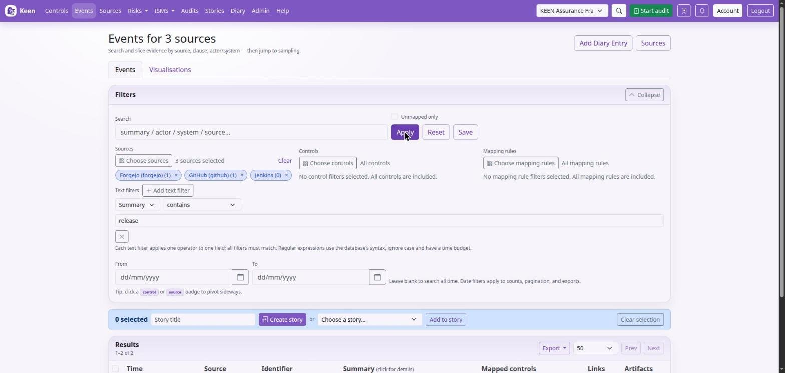
Sources, Controls and Mapping rules each accept one or more values, and each value shows how many matching events it has. An event matches a picker when it has any of the chosen values.
For anything more precise, add a text filter: one field (or any field), one operator, one value. Every text filter you add must hold, and matching ignores case. Apply, Reset and Save, with the Unmapped only switch, sit at the end of the filter card.
| Operator | Matching events |
|---|---|
| contains / does not contain | the field includes, or lacks, the text |
| begins with / ends with | the field starts, or finishes, with the text |
| equals / does not equal | the field is, or is not, exactly the text |
| matches regex / does not match regex | the field matches, or escapes, a regular expression |
The address bar, saved searches and exports carry every filter, so a filtered view can be shared or saved as it stands.
Going deeper: regular expressions in text filters
A regular expression uses the database's syntax and runs with a time budget. If a pattern is refused, simplify it or narrow the date range first.
Read one event
Click an event in the list to open a panel beside it with the summary, the mapped controls (reference and title) and the structured fields that identify the event. View full event opens the event page, which adds the timestamp, source, system, actor, action, outcome, severity and the normalised payload.

Open artefacts separately: the summary can leave out detail, and an external link may change or need another system's credentials.
Chart what you have filtered
The Visualisations tab follows the same filters as the list, and says which filters apply. A view of Diary events charts only Diary events. Choose the histogram over time, a sunburst of sources and their controls, or a heatmap. Break sources down by splits each source into the sub-elements one event field names, so a single source such as RSS shows one node per feed (system) or per connection, each with the controls its own events map to; a sub-element opens the events behind it.

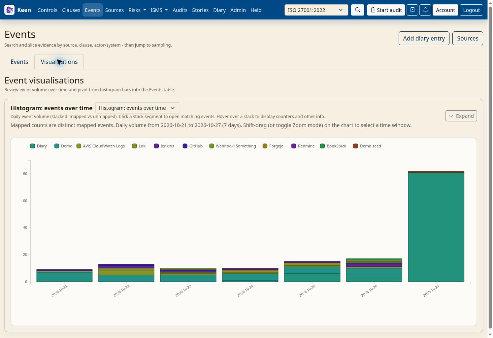
The Sources register gives the same filtering by origin: narrow by one or more source types, by name and by coverage (sources with unmapped events, with mapped events, or fully mapped). Its address bar carries the filters too.
Going deeper: redaction, masking and rationale links
Redaction removes recognised secret-like values as evidence arrives. Optional masking can hide personal data such as e-mail and IP addresses in evidence or exports. Neither detects every sensitive value, so review what you collect and export.
On the event page, administrators who manage mapping rules see a recorded automatic rule in the Rationale as a link to that rule's settings; other users see the rationale as text. If the rule has since been deleted, the editor says so and the recorded rationale stays on the evidence.
A control that lists the event through a crosswalk reads Another framework's control cross-referenced this control when the event was mapped. The opening words link to that other control, and for administrators mapped links to the rule that mapped the event to it. Any rationale written on the crosswalk link itself follows underneath.
Choose an action on an individual event
The buttons on an event each support a different review task. Which ones you see depends on your permissions, the event's supporting files and the audits open in the selected framework.
| Action | What it does | What to review |
|---|---|---|
| Create mapping from this event | Opens the mapping editor with this event as the starting point for a reusable rule. | Check the source connection, input and suggested conditions. Remove incidental values, select the intended controls and preview before saving. Use Apply saved rule to past evidence when existing evidence should follow. |
| Suggested controls | Lists in-scope controls whose catalogue text resembles the event's wording. They load automatically for an unmapped event; a mapped event offers them on request. | Each suggestion links to its control and says which words or concepts matched. Administrators can tick the ones that fit and choose Propose a rule with the ticked controls, which opens the mapping editor with the event as the draft and the ticked controls as targets. Nothing is mapped until the rule is saved. |
| Sample into audit | Adds the event as an evidence sample to an open or in-progress audit in the current framework. | Choose the audit, say in the notes why you selected the event, and choose whether to include its page link. Create an audit first if the list is empty. |
| Sample as PDF evidence | Prepares a downloadable PDF evidence report, portrait or landscape, with a preview. | Check legibility, context and sensitive content before sharing. This makes a file for your own evidence pack; adding the event to a Keen audit is a separate action. |
| Download all artifacts as evidence | Downloads a ZIP with an evidence PDF and the event's supporting artefacts. | Use it when reviewers need the files alongside the report. Let larger downloads finish, and review each file for sensitive information; masking depends on your preferences and the file format. |
| Ask question (Questions tab) | Starts a discussion thread attached to the event, with optional attachments. | Ask something specific about missing context, relevance or the result. The thread stays with the evidence; follow replies there or on the Questions page. |
A typical sequence: sample a deployment event into a change-management audit, ask why its approval is missing, and create a mapping rule once you know which deployment records support the control. Download the PDF or ZIP when you need to share a reviewed evidence pack.
Review events, questions and incidents

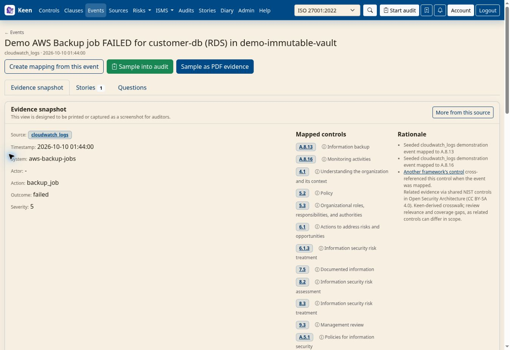
The event page opens on Evidence snapshot: the event's details, mapped controls and rationale, artifacts and the normalised payload, with the raw pointer collapsed beneath it. Stories, Audits, Incidents and Questions have their own tabs. Audits and Incidents appear once the event has been sampled into an audit or raised as an incident, and a number beside a tab counts its records. Questions holds the threads about the event and the form to ask a new one. A PDF of the event includes the snapshot, the questions and the raw pointer.
A review pass looks like this: search with a sensible date range and source filter, open an event, read its timestamp, actor, system, action, outcome, severity and payload, and open its artefacts. Then act: add a manual control mapping with a clear rationale, ask a question, or sample the event into an audit.
Mapping something is an assertion of relevance. Write the rationale clearly enough for an auditor to challenge it.
Going deeper: a quiet service or a broken collector?
The Sources view helps tell them apart. No events can mean no activity, a narrow query, a cursor already at the end, expired credentials or a disabled adapter. Investigate before drawing a control conclusion.
Questions and incidents
When evidence raises a question, keep the question with the evidence. When evidence shows something is wrong, escalate it. This section covers both, and the Sources view that helps you judge whether silence means safety or a stalled collector.
Sources, questions and incidents
Sources groups evidence by origin. Use a source's evidence links and visualisations to see activity over time and spot gaps. Missing evidence can mean a collection problem, a quiet system or an unsuitable query, so investigate before concluding anything about a control.
Read a source's activity insights

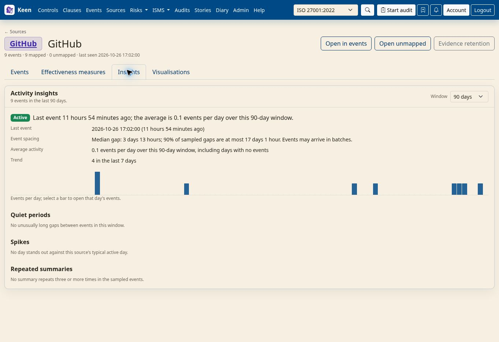
A source page compares its recent activity with its own history, so a nightly report and a busy log stream are each judged against their own rhythm. When a source has been silent for longer than its usual gaps allow, the page shows a notice as soon as it opens, and the Insights tab is marked.
- Read the status. Active means the last event arrived within the source's usual gap; Quiet means the silence is at least twice the longest gap it normally shows (and at least an hour); No baseline yet means fewer than three events in the window.
- Check the rhythm and trend. The usual gap between events, the longest gap that is still normal, and the last seven days compared with the seven before.
- Scan the daily bars. One bar per day in the window; select a bar to open that day's events.
- Review quiet periods, spikes and repeated summaries. Quiet periods are gaps inside the window that exceed the usual longest gap. Spikes are days with at least three times the typical active day's events. Repeated summaries group near-identical wording, ignoring numbers and identifiers, and show how many of each group are unmapped.
Investigate a quiet source before relying on it. A quiet source can mean a stalled collector, an exhausted cursor, expired credentials, a disabled adapter or a system that was idle. Check Administration → Sources and the collection log before treating the gap as evidence of anything.
A repeated summary with unmapped events is a good candidate for a mapping rule: open the example event, review its suggested controls and propose a rule from there. Change the window (30 to 365 days) to judge seasonal sources fairly.
Going deeper: how the figures are calculated
Daily counts cover the whole window. Gap and summary statistics use the most recent 5,000 events in the window, and the page says so when a source has more. The usual gap is the median time between consecutive events; the longest normal gap is the 90th percentile. Figures respect your diary visibility and the framework you have selected decides which events count as mapped.
Questions attach a discussion to the record it concerns. State the issue, the information you need and the context. Replies arrive in Questions or your account view; notification delivery depends on the installation, so the record in Keen is the place to confirm the discussion.
Incidents escalate an event to your organisation's incident workflow through a configured webhook. Keen saves the declaration once the receiver confirms it; investigation and resolution continue in your incident system.
Ask and answer questions about evidence and risks
Questions can be attached to an evidence event, a risk, a PESTLE(E) item, a SWOT item or a story. They keep a reviewer's uncertainty next to the material being reviewed.

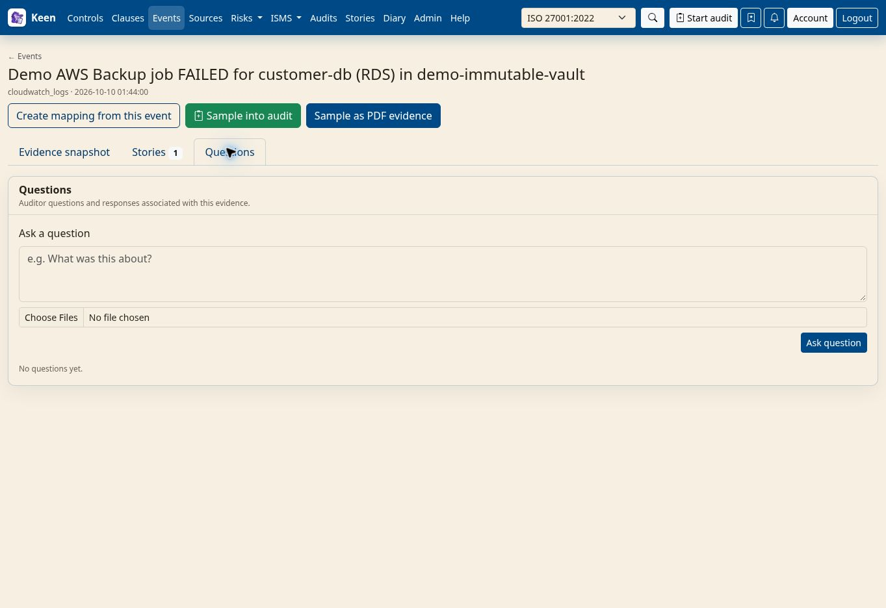
- Open the record and its Questions area. Your account needs access to the record and permission to create questions.
- Write a specific question, such as “Which restore test does this result refer to, and where is its completion record?”
- For evidence questions, attach supporting files where useful. Other question types are text-only.
- Follow the questions you opened, and unread administrator replies, in My questions. Administrators work from the Questions queue, filtered by unanswered, reviewing, answered or all threads.
- Return to the record to read the discussion in context. Administrators and the thread's author can reply, subject to access checks.
| Status | Meaning |
|---|---|
| Unanswered | A new thread, or one reopened by a reply from its author. |
| Reviewing | An administrator is investigating. |
| Answered | An administrator has replied. Administrators can also set statuses explicitly. |
A status records where the workflow stands. Whether the evidence is sufficient is still your assessment of the reply and its supporting material.
Going deeper: notifications and deletion
Unread indicators help authors find responses. Optional administrator-configured question webhooks can notify Slack, Teams, Google Chat or a generic destination; the discussion itself stays in Keen, and a reply in an external chat does not create a Keen answer. Deleting a thread needs the question-delete permission and removes the discussion history, so prefer a reply or a status change when the review should be kept.
Declare an incident from evidence
Incident declaration sends an event to your organisation's incident workflow. It needs an administrator-configured incident webhook, event access, and the incident.create permission. Without the integration, Keen cannot complete a declaration.
- Open the event. Check its timestamp, source, affected system and attached material.
- Choose the incident action. Give a concise title and describe the concern, its impact and the immediate context. The event link travels with the declaration.
- Submit once and wait for the result.
- On a successful response, Keen saves the declaration against the event with its creator and time. Continue the response in the receiving system.
Going deeper: failures, duplicates and deletion
A delivery failure shows an error and leaves the declaration unsaved. If the receiver may have processed the request but its response was lost, check the destination before submitting again. An HTTP success confirms delivery to the integration. Assignments, severity and resolution live in the external system. Deleting the declaration in Keen needs incident.delete and neither recalls the webhook nor closes an external ticket.
Stories
A story gathers the pieces of one episode, such as an incident or a change: the events that happened, the risk they realised, the policy or asset they concern, the people and suppliers involved, the measures and minutes that recorded the outcome, and your notes on what was decided. It can be read as a timeline or arranged as a flow chart, and it can be questioned and sampled like any other record.

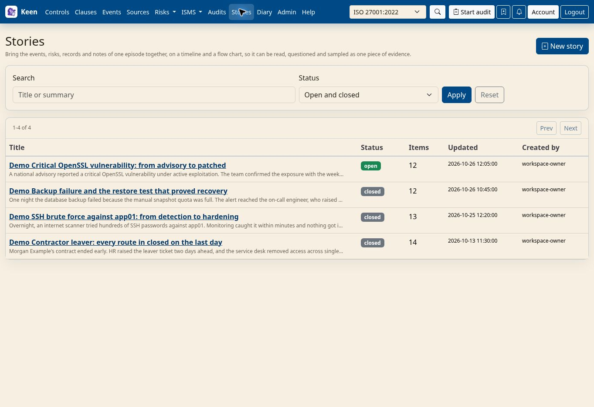
Start a story
- In the Events list, tick events (or right-click a row) and choose Create story. The selection survives paging and filtering until you clear it. Add to story appends the selection to an open story you can edit.
- On the histogram, zoom into a range and choose Story from window, or right-click a bar to take that bar alone. Write what happened in the window; it becomes the story's first note, followed by the window's events under the current filters, newest first, up to 200.
- Open Stories in the navigation to read, search or start a story from scratch.
- Open the Stories tab on a risk, document, asset, objective, SWOT item, effectiveness measure or set of meeting minutes. People and vendors have the same tab when you view them under ISMS → People & vendors, and an event page has a Stories tab. Each lists the stories that include the record. With
stories.manageit also adds the record to an open story you can edit, or starts a new story with it.

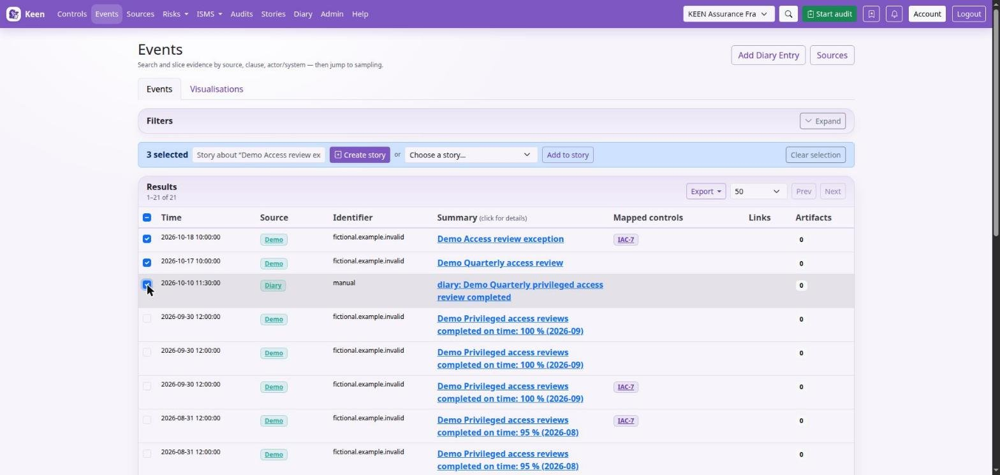

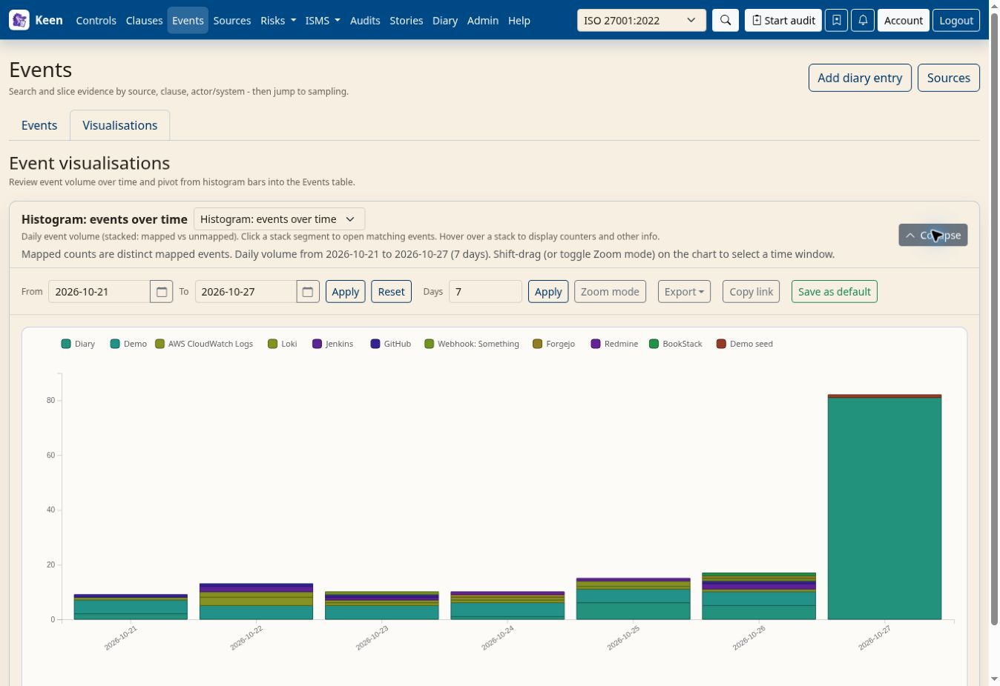
Build the story
On the story page, search for further events, or for risks, documents, assets, objectives, SWOT items, people, vendors, effectiveness measures and meeting minutes, and add notes as boxes of their own. Each item carries an optional label, a note and a time; an event uses its own time unless you set one.

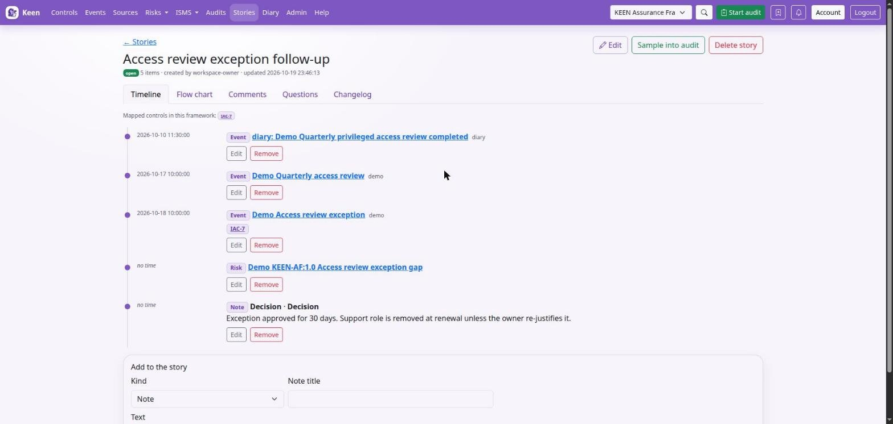

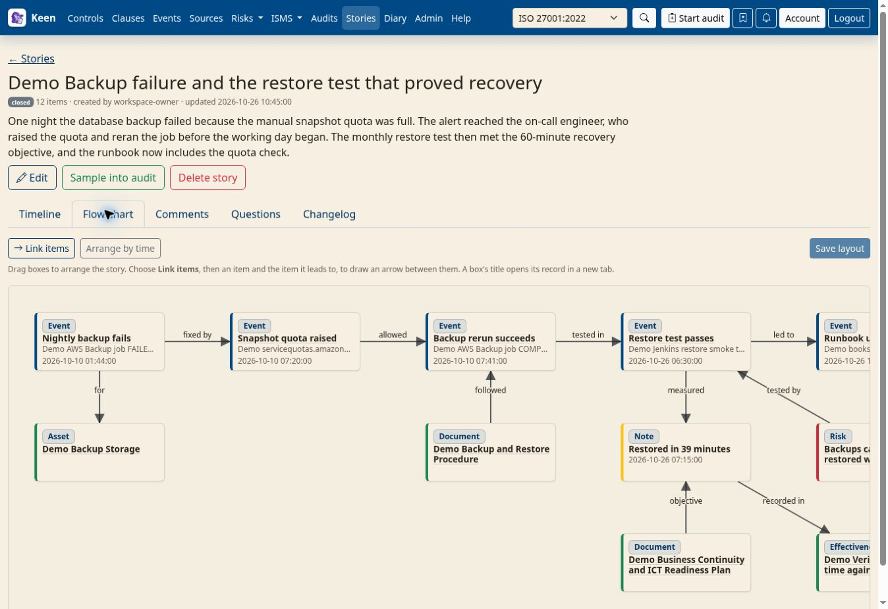
The Timeline orders items by time. The Flow chart shows the same items as boxes you drag into place and join with labelled arrows, for example from the sign-in to the export it led to. A box's title opens its record in a new tab, so you can check the detail and come back to the chart; drag a box by any other part of it.
Use the story
Sample a story into an audit like any other record; the sample carries the controls the story's events map to in the audit's framework. Ask questions against it, read its changelog to see how it was assembled, and discuss it in comments. Comments belong to the story; they do not change its version and they do not become diary evidence.

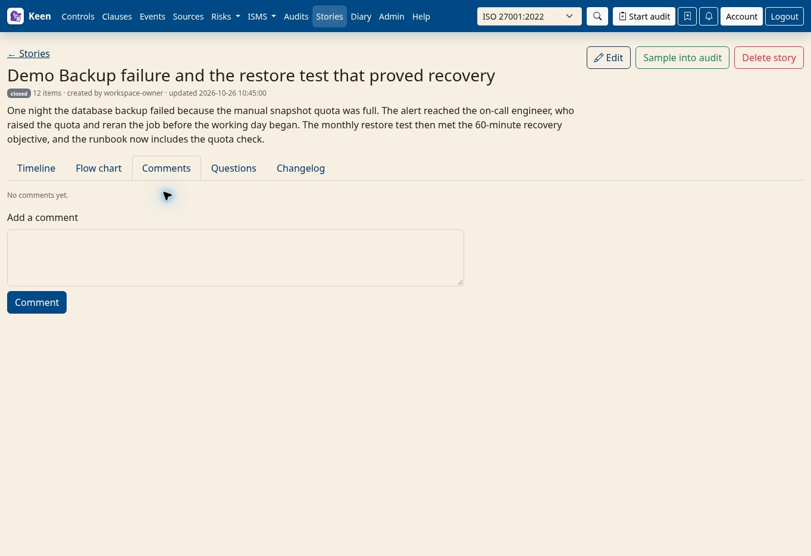
Going deeper: who can see what in a story
Three permissions govern stories. stories.read views stories and adds comments. stories.manage creates stories and edits or deletes the ones you created. stories.admin edits or deletes any story.
A story is a container, so each item is shown only to readers who can read the record itself: events need evidence access, risks their own read rule, and ISMS records (documents, assets, objectives, SWOT items, people, vendors, effectiveness measures and meeting minutes) ISMS read access. An item a reader cannot see appears as a placeholder without its identifier, label or note, so the shape of the story remains while its restricted content does not. Adding an item needs the same read access. A record's Stories tab needs stories.read as well as access to the record itself.
Evidence retention and audit samples
Evidence does not stay forever unless something protects it. Here is how retention and audit samples interact.
An administrator can retain evidence by maximum age or by maximum event count, or leave automatic retention off. Evidence sampled into an audit is protected while that audit exists. Removing the sample from the audit does not release the hold; deleting the audit does. Evidence also protected by another audit stays protected.
Going deeper: counts, purges and storage cleanup
A maximum event count applies to unprotected events, so audit-protected evidence can make the total larger. A purge removes eligible evidence and schedules storage cleanup; object-lock or retention rules in the storage provider may delay physical deletion, and administrators can inspect pending cleanup.